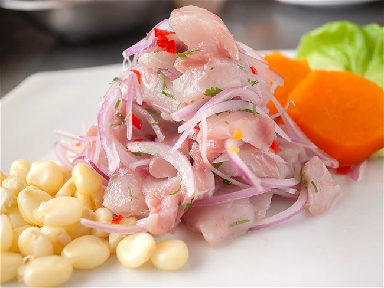

Ceviche

Description:
is a Peruvian appetizer of boiled potatoes in a spicy, creamy sauce made of queso fresco (fresh white cheese) and sautéed or grilled ají amarillo (yellow Peruvian pepper), red onion and garlic, all traditionally ground or pounded in a batán
Ingredients:
fish
lime juice
onions
chilli peppers
salt
cilantro
Steps
-
Place the fish cubes in a non-reactive bowl (glass or ceramic is ideal).
-
Let the fish marinate in the lime juice for about 10-15 minutes in the refrigerator. This acid "cooks" the fish, denaturing the proteins. The timing can vary based on how "cooked" you like your ceviche; less time for a rawer texture, more for a firmer texture.
-
While the fish is marinating, you can soak the sliced onions in ice water for about 10 minutes to reduce their sharpness. Drain well.
-
After the fish has marinated, drain most of the lime juice, leaving just enough to keep the mixture moist but not soupy.
-
Serve immediately to enjoy the freshness. Portion into bowls or plates.
-
Optionally, you can garnish with a few fresh cilantro leaves or a thin slice of lime for an extra touch of color and freshness.